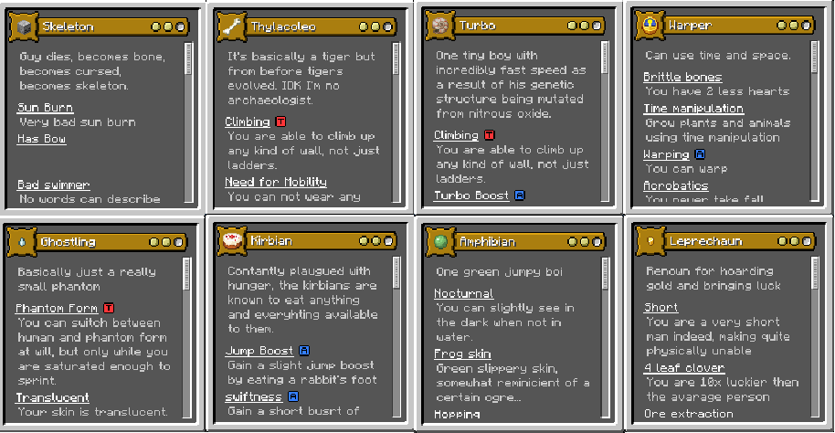
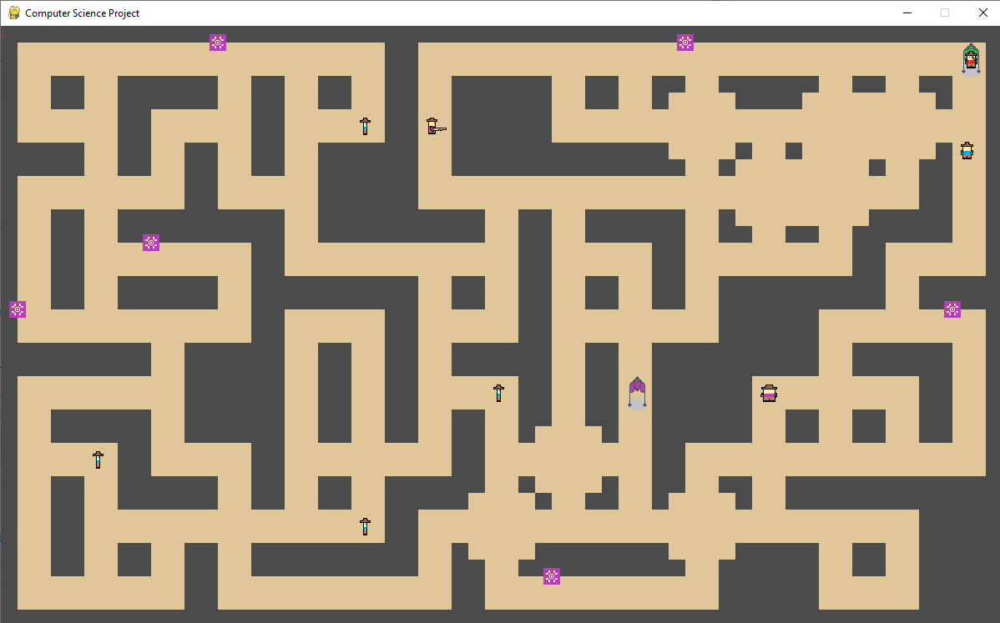
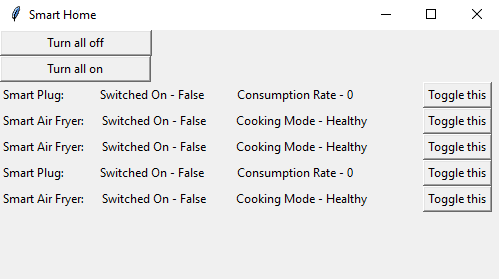
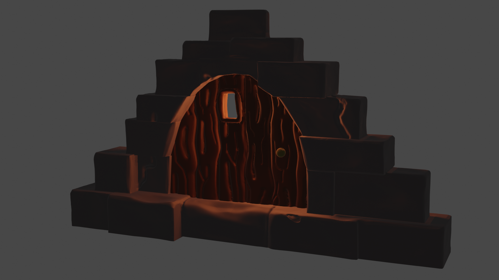

I KNOW THIS LOOKS AWFUL, I WAS ALMOST DONE WITH A PROFFESIONAL PORTFOLIO WEBSITE BUT ITS STUCK ON MY PC WHICH HAS NO WIFI AND I CANT FIND A USB STICK TO GET IT ON MY LAPTOP AND EVEN IF I DID I DONT HAVE ANY OF THE SOFTWARE FOR WEB DEVELOPMENT ON MY LAPTOP SO THATS SO SO FUN
This space was a bit empty so I filled it with Steve the snail. He was my first ever 3D model.

About Me:
I am in my second year of university at Portsmouth.I am a person who loves learning about different softwares and
programs. I first came into contact with programming through Scratch around the age of 8 and have been actively
learning a language since. Here are some of the things I've worked on in the past
Minecraft Custom Origins Mod:
This is one of the first large scale projects I worked on and the first not using Python, I took an existing
Minecraft Mod called the Origins Mod that adds 'origins' which give each player a set of unique powers. I had a
group of friends each provide me with a custom origin they wanted to play as and coded them within two weeks while
using the required language for the first time. This was an exciting challenge that taught me a lot of skills I used
in later projects. Here are some examples of what I made:

College Computer Science Project:
For my college computer science project I created a game using the Python library PyGame. It featured a randomly
generated grid that contained no dead ends, it then spawned enemies throughout the map that would pathfind towards
the player before shooting at them, alongside traps that would activate when walked near. Unfortunately I've lost the
final version of the program, however here is an image of one a late version that had traps just being implemented:

University first year programming project
Arguably a bit less impressive than some of my previous projects and definitely a lot less flashy, this project
displays a personal triumph as it was coded in tkinter which is a Python library I had previously struggled with in High
School. The ease with which I coded this program directly showed the progress I had made and greatly increased my
confidence and commitment to constant improvement.

Learning 3D modelling through Blender
By all accounts I should not have tried to learn 3D modelling, I have never really succeeded with anything artistic and
navigating the 3D space makes my head hurt. Despite my misgivings I decided to give it a try and...
I was awful.
That being said, I found myself enjoying the creative process and decided to continue trying to tap into the skillset
I'd never used before. A couple months down the line and I find myself relatively proud of the skills I've developed. As
of 15/11/2023 this is my latest creation:
